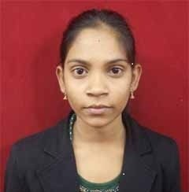

A responsive website created by Sushma Kumari Shaw

I am Sushma Kumari Shaw,Completed Master's From Banaras Hindu University at the year of 2021 in Computer Application. I am Fresher and looking for the new opportunites for the seek of growth and take a command for myself in term of learn new Technologies. I workded on a Machine Learning Project during my academics for the Face-Recognization from October,2020 to February,2021. I complete my Bacholer's From University Of Calcutta at 2018.